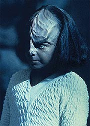
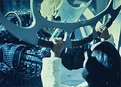
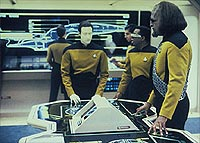
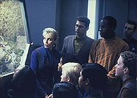
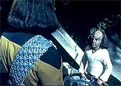

|
MANCHETE
DO EPISDIO
Enredo
traz de volta filho de Worf
para analisar sua atuao como pai
Episdio
anterior | Prximo
episdio
Sinopse:
Data Estelar: 45376.3.
A Enterprise se encaminha para Bilana III, para participar nos
testes de um novo mtodo de propulso, chamado Onda Sliton.
Quando a nave chega ao planeta, Worf recebe uma inesperada visita de
sua me adotiva, Helena Rozhenko, e de seu filho, Alexander. O
Klingon se surpreende, entretanto, quando Alexander informa que
pretende viver na nave com seu pai.
 noite, Worf
discute a situao com Helena. Ela revela que Alexander tem se
comportado mal e est precisando da presena e da instruo de
seu pai. Relutante, Worf concorda em aceitar a custdia do menino.
Mas quando ele descobre que o garoto est mentindo e se comportando
mal na escola, o oficial de segurana ameaa mand-lo para uma
rigorosa escola Klingon.
Sentindo que h mais no comportamento de Alexander do que parece a
princpio, Troi ajuda Worf a perceber que as aes do menino
podem ser o resultado de seu sentimento de abandono por parte de sua
me, morta, e de seu pai, que deixou a criana para ser criada
pelos avs na Terra. Worf comea a questionar sua idia de enviar
Alexander escola Klingon.
Enquanto isso, sentindo-se mal amado por seu pai, Alexander busca
abrigo no laboratrio biolgico, morada de seus animais favoritos.
Neste momento, a tripulao descobre que o teste da Onda Sliton
se tornou perigosamente instvel, de modo a ameaar uma colnia
prxima. A tripulao trabalha freneticamente para desenvolver um
mtodo de dissipar a onda e salvar o planeta, eles descobrem que
Alexander ficou preso no Biolab, onde um incndio est em curso.
 Apenas
segundos to tempo-limite (o laboratrio iria ser inundado com radiao
como consequncia da tentativa de dissipar a onda), Worf e Riker
conseguem resgatar Alexander, para em seguida a Enterprise
neutralizar o perigo da Onda Sliton. Percebendo a perda que ele
sentiria se Alexander deixasse a nave, Worf pede a seu filho que
fique com ele em definitivo.
Comentrios:
Esse episdio
deixa bem claro que a filosofia de Michael Piller para A Nova
Gerao --um programa para a famlia, em que todos
"pudessem discutir no caf da manh"-- j estava
firmemente implantada. Talvez at demais, no caso de "New
Ground".
A idia do roteiro fornecer novos desenvolvimentos para Worf, o
personagem que mais rendeu histrias continuadas ao longo de todo o
seriado. O objetivo era bastante simples: vamos trazer Alexander a
bordo e ver como reage papai Worf.
 Convenhamos, a idia
de ver um Klingon pai de famlia tem um certo atrativo, e
seguramente algo que valia a pena ser explorado. O problema
talvez seja fazer disso a essncia do episdio, no uma subtrama.
A misso da Enterprise, com a curiosa e interessante proposta da
Onda Sliton, apenas o mecanismo que colocar a vida do menino
em perigo para produzir o pice dramtico do episdio. No
existe qualquer objetivo real de tornar esse elemento da histria
particularmente importante, por mais que Geordi fique exaltando a
"ocasio histrica" vivida pela Enterprise.
Essa opo, de fazer o episdio 99,9% Worf & Alexander,
acabou fazendo com que o episdio ficasse leve demais. Faltou drama
para o enredo, que acabou se tornando quase um captulo de novela
--vemos interao entre os personagens, mas nada de realmente
importante acontece ao longo do segmento.
Alis, no s esse carter totalmente pr-personagens e
contra-enredo que foi roubado das novelas televisivas para aplicao
em "New Ground". O aspecto continuidade tambm foi
audaciosamente desenvolvido, ao concluir a histria com Alexander
ficando a bordo. Sem dvida, uma atitude inteligente, por
potencializar novas histrias que desenvolvessem melhor o
relacionamento entre pai e filho em episdios posteriores, sem
exigir desculpas esfarrapadas como "Worf, meu filho, estava
passando por aqui e resolvi deixar o seu filho esta semana com voc".
 Talvez
tenha faltado um pouco de ao e de enredo para o episdio. Mas
vamos mudar de tom, para julgar "New Ground" pelo
que ele , em vez de avaliar o que ele no . Ao fazer isso,
conseguimos perceber que trata-se de um segmento que, se no
brilhante, ao menos bem-sucedido. Se a proposta era mostrar papai
Worf e seu filhinho, o roteiro consegue tratar muito bem da questo.
especialmente divertido ver Worf, ingenuamente, achar que uma
conversa com seu filho teria resolvido o mau comportamento do
menino. Mesmo assim, temos a certeza de que o Klingon se dar muito
bem assumindo os encargos da paternidade, apesar de sua natureza
aparentemente pouco apta ao papel. engraado ver Worf
participando de reunies de pais, conversando com a professora de
seu filho e reagindo aos comportamentos de Alexander. Sentimos
claramente o desconforto dele e a viso pouco realista do que seria
preciso para educar o menino.
O personagem de Alexander, em compensao, no diz muito ao
telespectador. Na verdade, sua funo apenas servir como algo a
que Worf deva reagir. E, enquanto tal, ele serve. Ainda veremos o
pequeno Klingon mais tarde ao longo da srie, mas nada que seja
capaz de elevar o status do personagem a algo mais do que "o
filhinho do Worf".
 Os outros
personagens regulares passaram totalmente despercebidos pelo episdio,
com exceo talvez de Troi, que inicia um processo de aproximao
do Klingon para ajud-lo com seu filho. Neste episdio no l
grande coisa, mas isso se tornar um fator mais forte nas prximas
temporadas, culminando em um quase-romance entre os dois.
Citaes:
Worf - "Klingon
schools are designed to be difficult. The physical and mental
hardships faced by the students are meant to built character and
strength. However... if you wish to face a greater challenge, you
may stay here with me. It will not be easy, for either of us, but
perhaps we can face the challenge together."
("Escolas Klingons so projetadas para serem difceis. Os
desafios mentais e fsicos enfrentados pelos estudantes tm como
objetivo construir carter e fora. Entretanto... se voc quiser
enfrentar um desafio ainda maior, voc pode ficar aqui comigo. No
ser fcil, para nenhum de ns, mas talvez possamos enfrentar
esse desafio juntos.")
Trivia:
 Aps Jon Steuer ter interpretado Alexander no episdio "Reunion",
agora a vez de Brian Bonsall usar a maquiagem do mini-Klingon.
Aps Jon Steuer ter interpretado Alexander no episdio "Reunion",
agora a vez de Brian Bonsall usar a maquiagem do mini-Klingon.
Georgia Brown volta como Helena Rozhenko. Sua primeira apario
havia sido em "Family".
Brian Bonsall voltar a aparecer como Alexander nos seguintes episdios:
"Ethics", "Cost
of Living", "The Perfect
Mate", "Rascals",
"A Fistful of Datas" e "Firstborn".
Ficha
tcnica:
Histria de Sara Charno &
Stuart Charno
Roteiro de Grant Rosenberg
Direo de Robert Scheerer
Exibido em 06/01/1992
Produo: 110
Elenco:
Patrick Stewart como
Jean-Luc Picard
Jonathan Frakes como William Thomas Riker
Brent Spiner como Data
LeVar Burton como Geordi La Forge
Michael Dorn como Worf
Gates McFadden como Beverly Crusher
Marina Sirtis como Deanna Troi
Elenco convidado:
Georgia Brown
como Helena Rozhenko
Brian Bonsall como Alexander Rozhenko
Richard McGonagle como Dr. Ja'Dar
Jennifer Edwards como Kyle
Majel Barrett-Roddenberry como a voz do computador
Sheila Franklin como alferes Felton
Episdio
anterior | Prximo
episdio
|